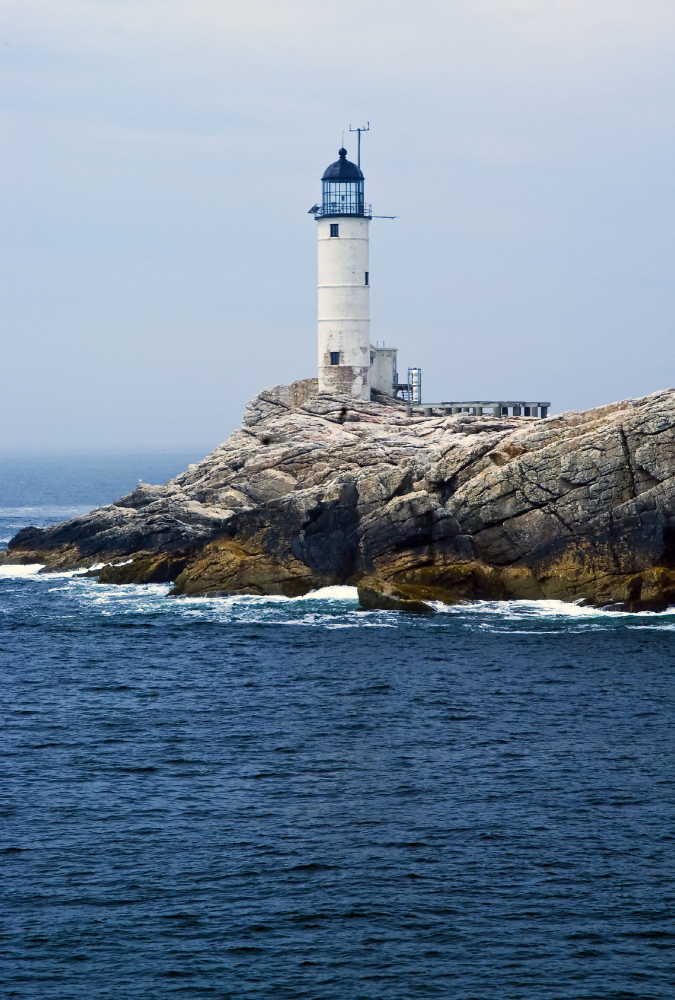

SpriteLab prompt experiments for an animated Lovecraftian coastal scene.
Started: 2026-10-16 · Status: Experiment
The scene
A lighthouse on a rocky cape, looking out over an expanse of dark ocean under an eldritch sky.
The composition emphasizes vastness — the ocean and sky dominate, the land is just a sliver
rising from the bottom-right into a cliff where the lighthouse stands. Scattered craggy rocks
break the waterline. We're at the edge of the world.
Composition rules
2/3 ocean + sky, 1/3 land — the water and sky dominate. Land occupies the right third only.
Land enters bottom-right — continuous coastline rises from bottom-right edge to a cape/cliff where the lighthouse sits
Lighthouse centered on the cliff — the focal point, but not the largest element. The ocean dwarfs it.
Rocks in the water — craggy sea stacks scattered across the left 2/3, waves breaking. We're at a rugged coast edge.
Foreshortening — low camera angle, looking out over the expanse. Horizon about 40% from top.
A single eye — opens and closes in the upper sky, partially hidden by nebula clouds
Color constraints
Strictly limited. No warm colors except star points and the lighthouse lantern.
#050510
#0a0a1a
#111138
#1a1a50
#2d1b69
#4a1942
#6a4c93
#0d7377
#e8d060
#c8c8e0
Blue-to-purple range for sky, water, and land. Eldritch green (#0d7377) for accent
glow — the eye, bioluminescence in the water, lighthouse beam tint. Yellow/white only for
stars and the lantern.
Prompt color strategy
Use named colors in the prompt text for intent — the model understands
"deep indigo" and "midnight navy" better than hex codes in prose. Then use
SpriteLab's palette lock tool with hex values to enforce the actual output.
Two layers: language for composition, palette lock for enforcement.
Sky (upper)
void black, midnight navy
#050510, #0a0a1a
Sky (lower) / nebula
deep indigo, dark violet, muted purple
#111138, #1a1a50, #2d1b69, #4a1942, #6a4c93
Water
dark navy, deep ocean blue
#0a0a1a, #111138, #1a1a50
Accent glow
eldritch teal-green
#0d7377
Stars / lantern
pale gold, cold white
#e8d060, #c8c8e0
Land / rocks
blue-black stone, dark indigo rock
#0a0a1a, #111138, #1a1a50
Visual target
CSS mockup of the composition we're aiming for. This is the mood, layout, and color reference
for all prompts below — SpriteLab, PixelLab, or manual.
CSS mockup — composition and color target. The eye opens/closes in the sky.
Coastline enters bottom-right, rocks scatter in the water, ocean dominates.
Experiment 1 — Sprites (free tier)
SpriteLab's text-to-sprite mode is available without subscription. We test the two
key elements first: the cosmic eye and the lighthouse. These tell us whether SpriteLab
can handle the mood, palette, and subject matter before we invest in backgrounds.
1A. The cosmic eye
Sprite — open eye
Cosmic eye, fully open
Describe
A single enormous cosmic eye, front view, fully open. The iris is eldritch teal-green with a vertical slit pupil in void black. The sclera glows faint muted purple. Dark indigo nebula clouds partially shroud the edges. Tendrils of dark violet cloud curl around the eye.
Style Notes
Pixel art, transparent background. Unsettling, ancient, Lovecraftian. Colors: deep indigo, dark violet, muted purple sclera, eldritch teal-green iris, void black pupil. No warm colors.
The base sprite. Must read unmistakably as an eye at 64x64. The teal-green iris is
the focal point — everything else is dark framing around it.
Open SpriteLab
SpriteLab suggested prompt
Front-view, fully open cosmic eye. Eldritch teal-green iris, void black vertical pupil. Faint muted purple glowing sclera. Shrouded by dark indigo and violet nebula tendrils.
Result
Click, then paste
1A-v2. The cosmic eye — sky-integrated
Iteration on v1. The eye should not look like a floating monster eye from a dungeon.
It needs to blend with the sky — tentacles attenuate into clouds, the shape dissolves
into nebula. The eye is part of the atmosphere, not a creature hovering in it.
Sprite — open eye v2 (sky-blended)
Eye in the sky — emerging from nebula
Describe
An eye in the sky, formed from nebula clouds. Front view, fully open. The iris is eldritch teal-green with a vertical slit pupil — the only sharp element. The eye has no distinct border — its edges are clouds, dissolving into the surrounding sky. Tendrils extend outward from the eye and become ordinary cloud wisps, indistinguishable from natural nebula. The sclera is muted purple cloud. This is a sky phenomenon, like seeing a face in the clouds — an eye in the sky that could be real or could be pareidolia.
Style Notes
Pixel art, transparent background. Eye in the sky — not a creature, not floating. It IS the sky. Cloud edges dissolve to transparency. Tentacles wrap into clouds, blurring where eye ends and sky begins. Colors attenuate at the edges — unnatural purples and teals near the iris fade to normal deep indigo and dark navy cloud tones at the outer edges. Only the teal-green iris is crisp. No hard outlines.
Key change from v1: the eye is part of the sky, not floating in it. Tentacles = cloud
wisps that fade out. Should look like you're not sure if you're seeing an eye or just
clouds — until the iris catches the light.
SpriteLab suggested prompt
Front view, fully open sky eye. Muted purple cloud sclera, eldritch teal-green iris with sharp vertical slit pupil. Dissolving cloud edges and wisps.
Results
Ours
Click, then paste
Suggested
Click, then paste
1A-v3. The cosmic eye — storm cloud with eye
Iteration on v2. Less tentacles, more cloud. The eye is ~half of a wider storm cloud.
Creepiness comes from color tone and the fact that a cloud has an eye — not from tentacles.
Minimalist, atmospheric.
Sprite — open eye v3 (storm cloud)
Storm cloud with an eye
Describe
A wide dark storm cloud, horizontally elongated, pixel art fluffy and billowing. In the center of the cloud, an eye opens — eldritch teal-green iris with a sharp vertical slit pupil. The eye occupies about half the cloud's width. The rest is pure cloud: deep indigo and dark violet billows, stormy and dense at center, softer and wispier at the edges, dissolving into transparent sky. No tentacles. The cloud is the shape — a natural-looking storm cloud that happens to have an eye. The creepiness is subtle: just color and the eye itself.
Style Notes
Pixel art, transparent background. Wide format — cloud is wider than it is tall. Minimalist horror: a storm cloud with one eye, nothing more. Cloud edges are fluffy and natural, dissolving to transparency. Colors: void black cloud core, deep indigo body, dark violet edges, muted purple highlights. Teal-green iris is the only unnatural color. No tentacles, no tendrils, no eldritch shapes — just cloud and eye.
128x64 — wider format for the cloud. Eye is ~half the cloud width.
No tentacles. Storm cloud aesthetic. Creep from color + eye only.
Results
Ours
Click, then paste
Suggested
Click, then paste
1A-v4. The cosmic eye — cumulonimbus
Iteration on v3. The cloud should be a cumulonimbus shape: flat bottom edge, billowing
rounded top. Towering, dense, storm-like. The flat base gives it visual weight and
grounds it in the sky.
Sprite — open eye v4 (cumulonimbus)
Cumulonimbus cloud with an eye
SpriteLab suggested prompt
Wide, dark cumulonimbus cloud with a flat bottom and billowing indigo-violet top. A small, central eldritch eye features a teal-green iris and vertical slit pupil. Ominous, idle.
Describe
A dark cumulonimbus cloud — flat bottom edge, billowing rounded top that towers upward. The cloud is wide, roughly 2:1 width to height. In the center of the cloud, a single eye opens: eldritch teal-green iris with a sharp vertical slit pupil. IMPORTANT: the eye is small relative to the cloud — only about half the cloud's width. The cloud extends well beyond the eye on both sides. The bottom of the cloud is a clean flat horizontal line, dark and dense. The top billows upward in rounded cauliflower shapes, deep indigo and dark violet masses. Cloud edges at the top are soft and dissolve into transparent sky. No tentacles. Most of the sprite is cloud — the eye is embedded within it, not dominating it.
Style Notes
Pixel art, transparent background. Cumulonimbus shape: FLAT bottom, rounded billowing top. Wide format 128x64. The eye is HALF the cloud width — cloud extends well beyond the eye on left and right. Cloud base is a near-straight horizontal line. Top is puffy, towering, cauliflower-shaped. Colors: void black cloud core, deep indigo body, dark violet billows, muted purple highlights on the rounded top. Teal-green iris only unnatural color. No tentacles.
Cumulonimbus: flat base, rounded top. The flat bottom anchors the cloud visually.
The eye sits in the dense middle section.
Results
Ours
Click, then paste
Suggested
Click, then paste
1A-anim. Eye blink animation
Animation of the cumulonimbus eye. SpriteLab animation mode (~20-30 credits).
The eye is closed for 2/3 of the cycle — the blink is the event, not the norm.
Animation — eye blink cycle
Cumulonimbus eye: blink, look, close
Describe the motion (ours)
The eye is closed — just a dark cloud with a faint horizontal seam. It slowly blinks open, eyelids parting to reveal the teal-green iris. The eye stays open briefly, then the pupil drifts slowly to the left, pauses, then slowly drifts to the right. After looking both ways, the eye slowly closes again — eyelids meeting at the seam. Everything moves slowly and ominously. The cloud itself is still — only the eye moves.
SpriteLab suggested (used, based on ours)
The dark cloud remains still with a faint horizontal seam representing a closed eye. The eyelids slowly part to reveal a teal-green iris, which then drifts deliberately to the left and right before closing again. The eye remains shut for the one third of the duration, creating an ominous and slow-moving animation cycle.
16 frames max. 1/3 closed, 2/3 blink+look. Duplicate closed frames in Godot to extend idle.
Result
Click to paste, or
Animation — eye look (separate)
Eye movement: look left, look right
Describe the motion
The eye shifts its gaze slowly from center toward the left, pausing as if scanning. Then glides back through center to the right, pauses, and returns to forward-facing. The movement is slow and deliberate. The cloud does not move — only the pupil and iris shift.
SpriteLab suggested (used)
The character shifts their eyes slowly from the center toward the left, pausing briefly as if scanning the area. They then glide their gaze back through the center and over to the right side before finally returning their eyes to the forward-facing position.
Separate animation from the blink — composable in Godot.
Blink handles open/close, this handles the look direction.
Result
Click to paste, or
Learnings from the eye experiments
Prompt strategy
Short beats long — for centered subjects. SpriteLab's suggested prompts are 1-3 sentences and produce similar results for simple centered subjects (the eye). But for multi-element compositions (lighthouse + cliff + rocks), their compression loses spatial relationships and causes framing artifacts (cutoffs).
Spatial context matters. "Cliff trailing to bottom-right" outperforms "atop a rocky cape" — explicit spatial anchors ("trailing to", "extends from", "bottom-right") prevent the model from cropping or misframing. Their suggested prompts strip these out, which hurts compositions.
Lead with shape. Real-world shape names ("cumulonimbus", "flat bottom") give the model a strong prior. One concrete shape word does more than a paragraph of edge descriptions.
2-3 details + mood. Their formula: [shape/subject] + [2-3 specific visual features] + [1 mood word]. Example: "Wide, dark cumulonimbus cloud with flat bottom and billowing indigo-violet top. A small central eldritch eye. Ominous, idle."
Skip negatives. "No tentacles", "no warm colors" — the model works better with what TO render, not what to avoid. Negatives get stripped in their suggested rewrites.
Ratios need emphasis. The model defaults to filling the frame with the subject. Proportion instructions ("eye is half the cloud width") need to be stated explicitly and repeated.
Process
Iteration > perfection. We went through 4 concept shifts (monster eye → sky eye → cloud eye → cumulonimbus). Each was a shape/concept change, not a wording tweak.
Named colors work without palette lock. We never used the hex palette lock tool — named colors in the prompt text ("eldritch teal-green", "deep indigo") were sufficient for consistent palette.
Animation is effective. 16-frame coherent blink+look from a single motion description. The "describe the motion" format works well — action sequence in plain language.
Their suggested prompt is the best signal. No public prompt guide exists. The rewrite they offer IS the guide — study what they keep and what they drop.
1B. The lighthouse
Applying learnings: shorter prompts, lead with shape, 2-3 details + mood, no negatives.
Inspiration

White Island Lighthouse, NH — cylindrical tower, one dark band, square base, bare rock
Sprite — lighthouse on cape
Weathered lighthouse on rocky cape
Describe (v1 — too realistic)
Tall cylindrical New England lighthouse on a rocky cape, viewed from the left. Pale blue-white stone body with one horizontal dark indigo stripe at the midpoint of the tower. Pale stone above and below the stripe. A narrow vertical slit window. Shadows along the curved sides emphasize the cylindrical shape. Square stone base at the bottom with a small dark doorway. Dark metal lantern housing at the top, compact. Pale gold light glowing from the lantern windows. Jagged cliff trailing to bottom-right. Solitary, desolate.
SpriteLab suggested (v1)
Tall, cylindrical, pale blue-white stone lighthouse, two dark indigo stripes, slit window. Dark metal, angular lantern glows pale gold atop a rocky cape with jagged cliff, viewed left.
Describe (v2 — stylized, moonlit, isometric)
Isometric view of a lighthouse compound on a rocky cape. Tall cylindrical lighthouse tower in deep indigo with one slightly lighter indigo stripe at the midpoint. Narrow slit window. A small attached keeper's house at the base, door facing downslope toward bottom-right. Dark lantern housing at the top, unlit. Entirely in blues — moonlit, one side catches faint cold blue highlight, the other falls into deep shadow. Rocky cliff slopes down to the bottom-right. Stylized, ominous, nighttime.
Style Notes
Pixel art, transparent background, isometric perspective. All blues, no white, no warm colors, no light source. Moonlit: cold blue highlights on one edge, deep shadow on the other. Keeper's house is small relative to the tower. Stylized, not realistic.
64x128 vertical. First pass: lighthouse was cutoff — used their suggested prompt.
Beam will be added as a separate animated element in Godot.
Open SpriteLab
Results
Side view
Click, then paste
Isometric
Click, then paste
Scene background
Scene iteration moved to its own page — Scene Iteration.
Using DALL-E (gpt-image-1) to generate the background. Currently on v4, iterating
cliff ratios and composition.
Future work
Composite scene. Layer the eye cloud sprite and lighthouse sprite over the DALL-E background using CSS positioning. Animate the eye blink on the page.
Parallax scrolling. Three depth layers — foreground (lighthouse/cliff), midground (sea rocks, waves), background (distant islands, clouds, horizon). Generate each layer separately with DALL-E, composite with slight parallax offset for depth.
SpriteLab palette lock. Never tested — named colors in prompt text were sufficient. Worth testing whether hex palette lock improves color consistency across sprites.
SpriteLab backgrounds. Their native background mode requires a subscription. DALL-E worked as an alternative, but SpriteLab's output may match sprites better.
Sea rocks sprite pack. Craggy rocks for the waterline (~4 credits). Needed for the full scene composition.
DALL-E background iteration. v2 is close but may need refinement — stronger pixel grid, more visible block edges, better palette match with sprites.
Godot integration. Import sprites + animation sheets into Godot 4. Parallax scrolling, lighthouse beam as a separate animated light.
Note on page styling: we don't love this CSS 'look', but we're keeping it as-is.
The purpose of this page is to ensure human and machine see the same thing — a shared
visual reference for prompt iteration. Functional, not final.